Cold Dip
Morsowanie, zimne kąpiele i sauna — zmierzone na zegarku Amazfit, z tętnem, GPS i historią.
Aplikacja jest już zgłoszona i czeka na recenzję. Gdy zostanie przyjęta, ten przycisk otworzy kartę w Zepp App Store.
7 dni za darmo ze wszystkim, potem jednorazowe odblokowanie za 4,99 USD przez KiezelPay. Bez subskrypcji.
Jak to działa
Krótko, jedna sesja: od ekranu startowego do samopoczucia po wyjściu.
Zobacz sesję
- Otwórz Cold Dip na brzegu. Ustaw temperaturę wody przyciskami − / + i naciśnij START.
- Na brzegu: stoper liczy, gdy się szykujesz. Naciśnij, gdy wchodzisz do wody.
- W wodzie: czas w wodzie, tętno, temperatura wody i GPS przy pływaniu w otwartej wodzie. Naciśnij, gdy wychodzisz.
- Po wyjściu: czas od wyjścia z wody i odliczanie dogrzewania (afterdrop).
- Sauna, jeśli z niej korzystasz: aplikacja liczy rundę, potem wracasz do wody albo kończysz.
- Samopoczucie, 1–5, i zapis. Historia i rekordy zostają na zegarku.
Zrzuty ekranu
Ta sama sesja na okrągłym i prostokątnym zegarku Amazfit.
Zegarki okrągłe
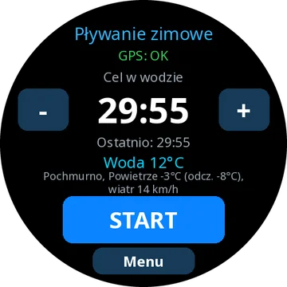
Start 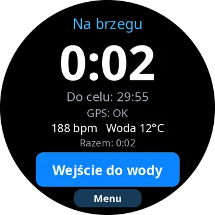
Na brzegu 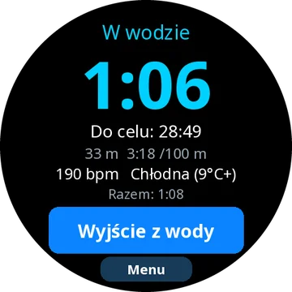
W wodzie 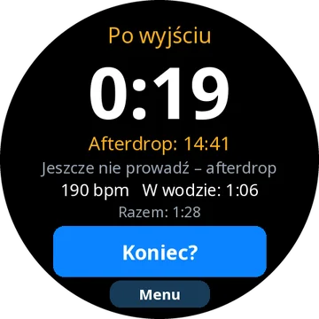
Po wyjściu 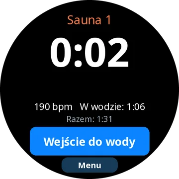
Sauna 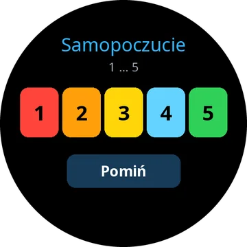
Samopoczucie
Zegarki prostokątne
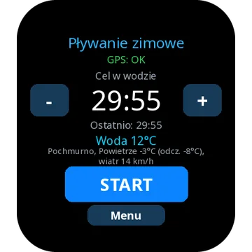
Start 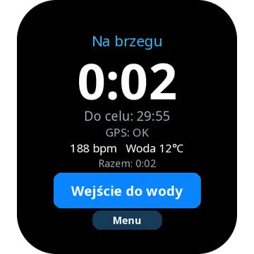
Na brzegu 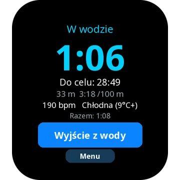
W wodzie 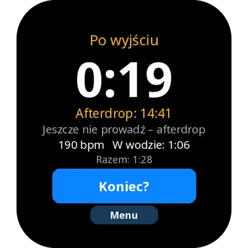
Po wyjściu 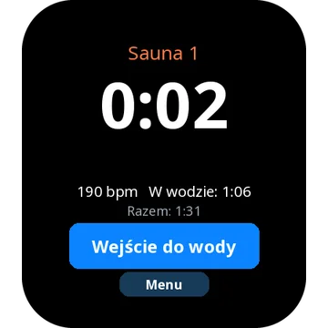
Sauna 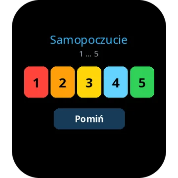
Samopoczucie
Cena
Płatna jest cała aplikacja — nie ma późniejszego, osobnego odblokowania „Pro”.
- 7 dni za darmo ze wszystkimi funkcjami, od pierwszego otwarcia aplikacji.
- Potem jednorazowe odblokowanie za 4,99 USD przez KiezelPay (kzl.io). Zegarek pokazuje kod, płacisz w przeglądarce.
- Bez subskrypcji. Aplikacja nie widzi danych karty. Płatność obsługuje KiezelPay.
Obsługiwane zegarki Amazfit
Cold Dip działa na Zepp OS 3 (API 3.0) i nowszych. Dokładną listę modeli pokaże sklep, gdy Zepp przyjmie paczkę.
- Balance Balance, Balance 2, Balance 2 XT, Balance 3, Balance Ultra
- Active Active, Active 2 (okrągły i prostokątny), Active 3 Premium, Active Edge, Active Max
- T-Rex T-Rex 3, T-Rex 3 Pro, T-Rex Ultra, T-Rex Ultra 2
- Cheetah Cheetah (okrągły i prostokątny), Cheetah Pro, Cheetah 2 Pro, Cheetah 2 Ultra
- GTR / GTS / Falcon GTR 4, GTS 4, Falcon
- Bip Bip 5 Unity, Bip 6, Bip Max
Bip 5 Unity nie ma GPS. Przy profilach z trasą pojawi się „szukam GPS…”, reszta aplikacji działa.
Nieobsługiwane (starszy Zepp OS): GTR 3, GTS 3, GTS 4 Mini, GTR Mini, Bip 5 (model bez Unity), T-Rex 2 i Band 7.
Prywatność i pogoda
Nie ma konta, analityki ani reklam. Tętno, GPS i historia sesji zostają na zegarku.
Gdy telefon jest połączony, pogoda (temperatura powietrza, wiatr, warunki) pochodzi z MET Norway Locationforecast 2.0, na licencji CC BY 4.0. Aplikacja wysyła tylko przybliżoną pozycję na api.met.no. Źródło: © MET Norway (CC BY 4.0).